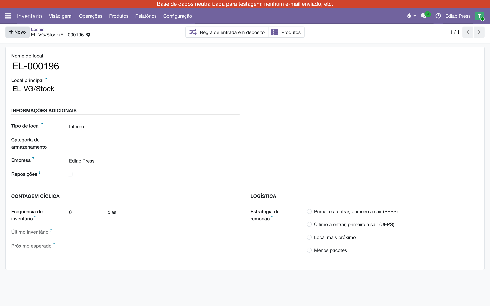
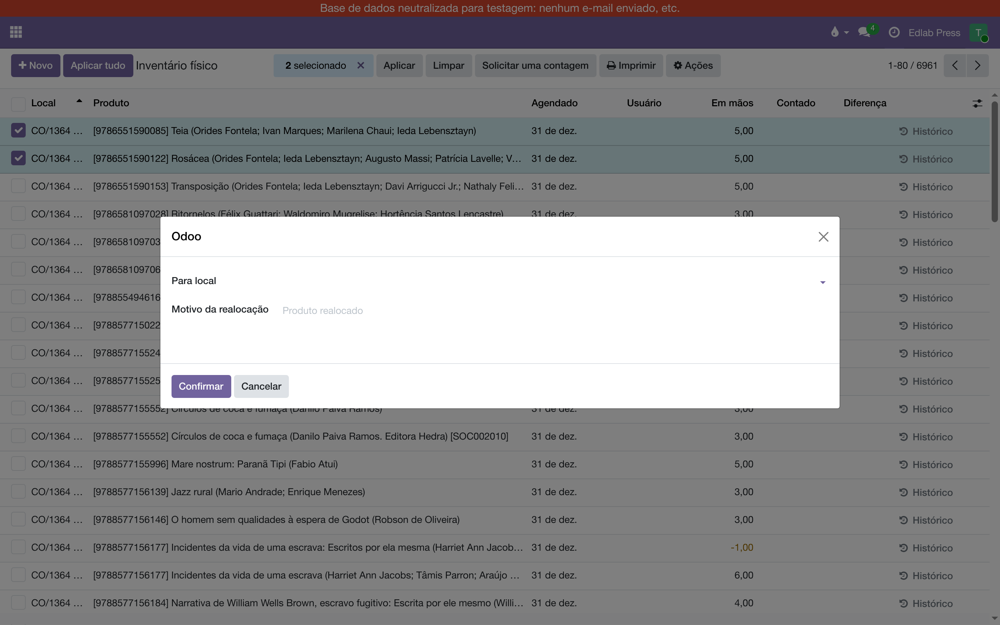
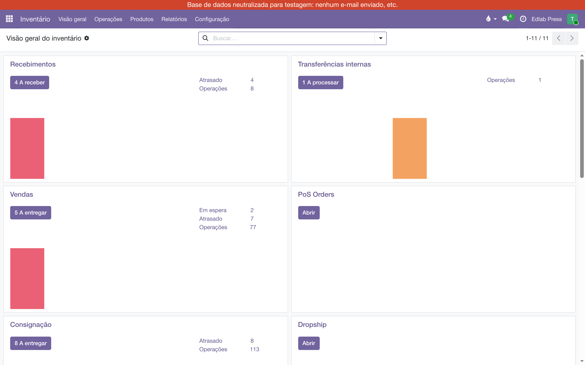

O depósito é endereçado: cada livro tem a sua prateleira, e o sistema sabe qual.
Este manual mostra onde a prateleira aparece, como mover livros de uma prateleira para outra
— um título por vez, ou várias linhas de uma só vez — e o erro mais fácil de cometer no caminho.
O que é uma prateleira?
É um local do Inventário, filho do estoque do armazém. O estoque da Edlab é
EL-VG/Stock; a prateleira 196 é EL-VG/Stock/EL-000196.
Na n-1 o prefixo é N1-. O número tem zeros à esquerda de propósito: em
ordem alfabética ele já é a ordem do passeio de quem separa.

A prateleira é um local comum do Odoo: o nome é o código, e o
Local principal é o estoque do armazém.
A raiz EL-VG/Stock também guarda livros — os que ainda não
foram endereçados. Ela não é uma prateleira: é o armazém inteiro, com todas as prateleiras dentro.
Isso importa na hora de transferir (veja a armadilha da raiz).
Onde vejo em que prateleira está um livro?
Na ficha do livro, o botão Em mãos abre a lista por
Local: uma linha por prateleira, com a quantidade de cada uma.
O mesmo título em duas prateleiras. O total é a soma; quem separa precisa da linha.
Outros dois lugares mostram a mesma coisa de outro ângulo:
Tela
Para quê
Inventário‣Operações‣Inventário físico
Todas as linhas de estoque, com a coluna Local. Filtre por
Local para ver o que há numa prateleira, ou agrupe por produto
para ver em quantas prateleiras um título está.
Inventário‣Configuração‣Locais
A lista das prateleiras (só para o administrador do Inventário). Na ficha de cada uma, o
botão Produtos abre o que está lá.
Como movo livros de uma prateleira para outra?
Com uma transferência interna. É um movimento como os outros, só que de um local
do armazém para outro local do mesmo armazém — e fica no histórico do livro como qualquer entrega.
Abra Inventário‣Operações‣Transferências‣Interno e clique
em Novo.
Em Local de origem, escolha a prateleira de onde sai —
digite o código (EL-000196) e escolha na lista. Em
Local de destino, a prateleira para onde vai.
Na aba Operações, adicione o livro e a quantidade.
Clique em Validar. A lista Em mãos do livro
muda na hora: menos na origem, mais no destino.
Uma transferência interna pronta para validar: origem e destino são prateleiras, e
a linha diz quantos vão.
A armadilha da raiz. O campo
Local de origem nasce preenchido com EL-VG/Stock, a raiz.
Deixe-o assim e o Odoo entende "de qualquer lugar do armazém": ele procura o livro em todas as
prateleiras, pega da que recebeu primeiro — muitas vezes a própria prateleira de destino — e prepara um
movimento dela para ela mesma. Pelo mesmo motivo ele aceita uma quantidade maior que a da raiz:
está contando as prateleiras todas. Troque a origem pela prateleira antes de adicionar
a linha. Dois avisos ajudam: a coluna Separar de na própria linha mostra de
qual prateleira a reserva vai tirar, e, se mesmo assim origem e destino ficarem iguais, o
Validar é recusado com a mensagem "Nada se move" — nada é gravado.
Por que a raiz "tem" mais do que tem. Para o Odoo,
EL-VG/Stock na origem não é o chão da raiz: é o armazém inteiro, com todas
as prateleiras dentro. Por isso a transferência diz "Disponível" com 24 na raiz e 25 pedidos, e
Separar de aponta para uma prateleira que você não escolheu. Se validar, o
movimento é real, dessa prateleira para o destino — nada sai do nada. Para tirar de uma prateleira
certa, escreva a prateleira na origem; para tirar só do chão da raiz, escolha a linha da raiz em
Detalhes ‣ Separar de.
Só prateleiras do armazém. A lista de origem e de destino da
transferência interna mostra apenas as prateleiras do próprio armazém. A prateleira de consignação de um
cliente (CO/…) e o local de ajuste não aparecem, e uma transferência apontada
para eles por outro caminho é recusada ao validar: livro só vai para a prateleira do cliente pelo
Pedido C, e só volta pelo retorno da consignação.
Se a prateleira de origem tem menos do que você pediu, a transferência fica em
Aguardando e o botão Validar oferece mover o que há.
Não há como tirar de uma prateleira o que não está nela.
Como movo várias linhas de uma vez?
Com Realocar, que é do administrador do Inventário. Serve para esvaziar uma
prateleira, juntar um título que se espalhou, ou endereçar de uma vez o que está na raiz.
Abra Inventário‣Operações‣Inventário físico e filtre pelo
Local ou pelo produto.
Marque as linhas que vão mudar de lugar.
Em Ações, clique em Realocar; escolha o
Local de destino e escreva o motivo.
Confirmar. Cada linha vira um movimento validado, com o motivo no histórico.

Duas linhas marcadas, um destino, um motivo. O movimento é imediato — não há
transferência para validar depois.
Onde acompanho as transferências internas?
No painel Inventário‣Visão geral, o cartão
Transferências internas conta o que está a processar, ao lado dos
Recebimentos e das Entregas. Clique no botão para abrir a fila.

O cartão existe porque o ajuste "Locais de armazenamento" está ligado; sem ele o
Odoo o esconde e arquiva o tipo de operação.
Como endereço o que ainda está na raiz?
Parte do estoque veio da migração sem prateleira, parado em EL-VG/Stock.
O jeito seguro é Realocar: no Inventário físico,
filtre Local = EL-VG/Stock (a raiz exata, sem as
filhas), marque as linhas e mande para a prateleira certa. A realocação parte da linha marcada, então
sai mesmo da raiz.
Por transferência interna com a raiz na origem não funciona
como parece: a raiz na origem é "o armazém inteiro", e o Odoo pode separar de uma prateleira em vez
do chão. Se precisar mesmo, abra Detalhes na linha e escolha em
Separar de a linha cujo local é a raiz EL-VG/Stock,
sem prateleira no fim.
Quem pode o quê
Perfil
Vê a prateleira
Transferência interna
Realocar
Cadastra prateleira
Logística, Assistente
sim
sim
—
—
Logística, Gerente e Direção
sim
sim
sim
sim
Comercial, Gerente
sim
sim
—
—
Demais usuários internos
sim, onde já liam estoque
—
—
—
Quando algo não sai como esperado
O que aparece
Por quê
O que fazer
"Nada se move: … sai de EL-000043 e volta para EL-000043"
A origem ficou na raiz EL-VG/Stock, e a reserva caiu na própria
prateleira de destino. O Odoo recusou validar.
Troque o Local de origem pela prateleira de onde o livro sai e valide
de novo. Se o livro está mesmo na raiz, abra Detalhes e escolha em
Separar de a linha da raiz.
"… não é prateleira de Vila Guilherme"
A origem ou o destino é um local de fora do armazém — uma prateleira de consignação, por
exemplo.
Transferência interna é entre prateleiras do armazém. Para a prateleira do cliente, o caminho é
o Pedido C.
Realocar não está no menu Ações
Só o administrador do Inventário realoca.
Use a transferência interna, ou peça ao gerente da Logística.
A transferência não mostra Local de origem nem Local de destino
O ajuste "Locais de armazenamento" está desligado nessa base — foi assim que ela chegou da migração.
É o que este módulo liga. Fale com a administração do sistema.
A transferência fica em Aguardando
A prateleira de origem tem menos do que a linha pede.
Confira o Em mãos do livro: ou a quantidade está errada, ou a prateleira.
O que não fazer
Não mude de prateleira pelo Ajuste de inventário (a coluna Contado).
Isso grava uma perda numa prateleira e um achado na outra — dois ajustes, sem a transferência que
explica. Mover é transferência interna ou Realocar.
Não deixe a raiz na origem de uma transferência entre prateleiras. Veja
a armadilha da raiz.
Não tente levar livro à prateleira de um cliente por transferência interna.
O sistema não oferece e não aceita: é o Pedido C que faz isso, com remessa e acerto.
Não crie prateleira fora do padrão. O nome é o código com seis dígitos
(EL-000414), e o local principal é o estoque do armazém. Fora disso a
ordem do passeio quebra.
Dúvida sobre acesso ou empresa: fale com a administração do sistema.
Toda transferência interna fica no histórico do livro, com data, origem e destino.